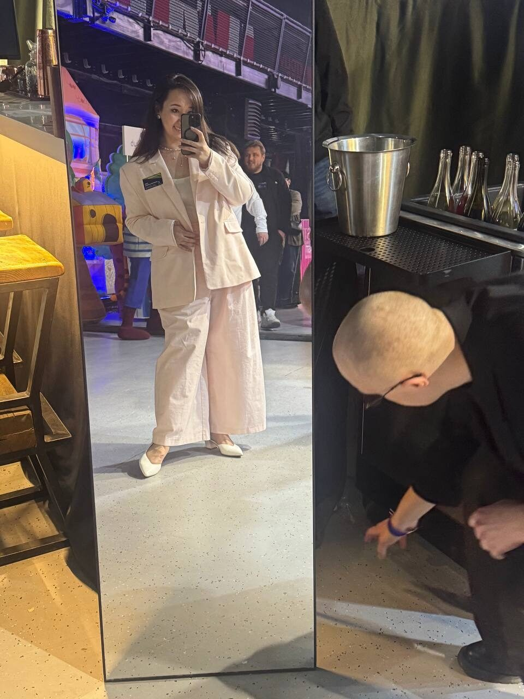
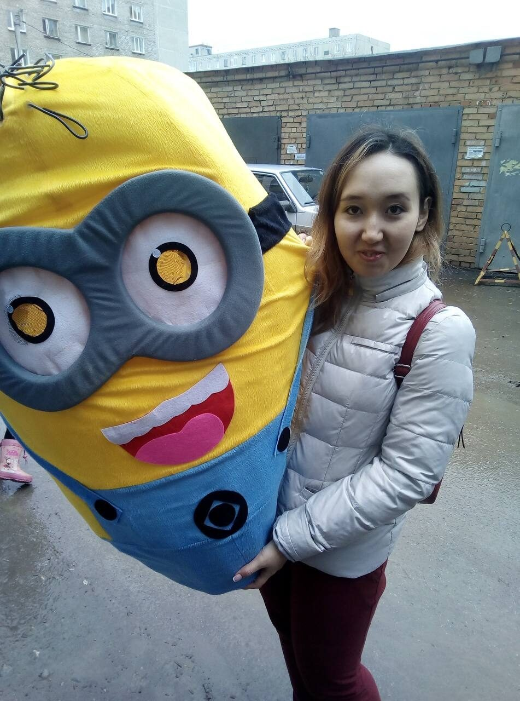
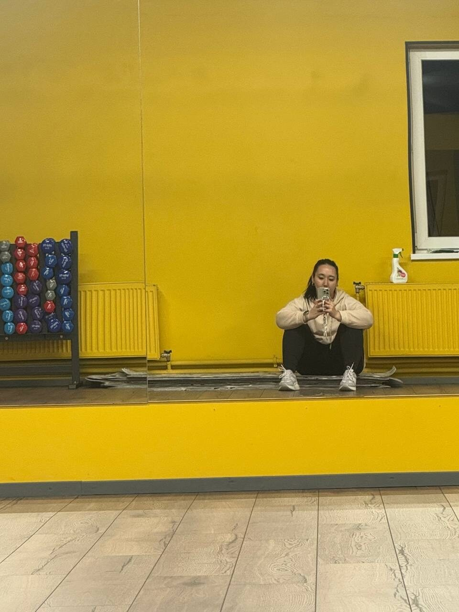
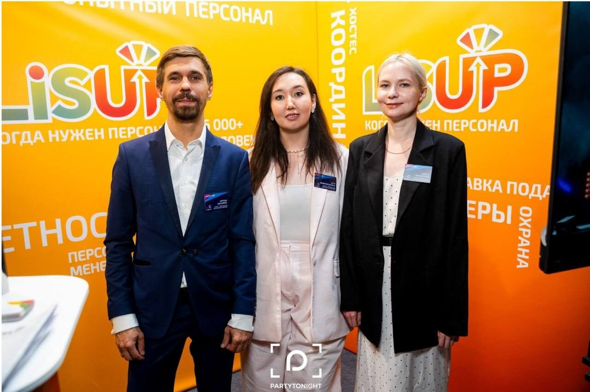
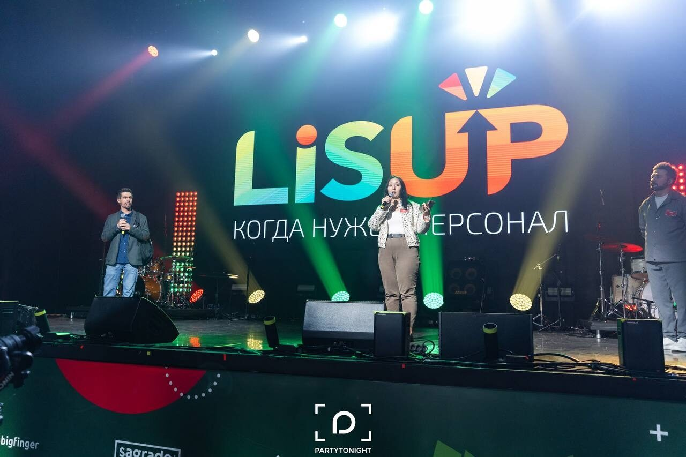

Личный профиль · Лия Ханова
Лия Ханова.
Собирать людей и расти честно.
Основатель LisUP, руководитель, человек, который любит связи, команды и разговоры по сути. Этот сайт — не витрина компании, а профиль Лии: о пути, принципах, мыслях, отношении к жизни и проектах, которые из этого выросли.
Сначала Лия
Не резюме.
Живой портрет.
Манифест
Я верю, что рост без честности превращается в витрину, а доброта без рамки — в кашу. Поэтому я учусь быть доброй и жёсткой одновременно: видеть человека, но не терять систему; любить людей, но не спасать взрослых вместо них.

Куда заглянуть
Сайт о человеке,
у которого есть компания.
Главная страница ведёт не к продающему лендингу, а к портрету: кто Лия, как она думает, на что опирается и какие проекты являются продолжением её характера.
01
Обо мне
Кто Лия: человек, руководитель, основатель. Без резюме — по сути.
Читать
02
История
Инженер ДВС → промоутер → предприниматель. История через опыт площадки.
Читать
03
Принципы
Доброта и жёсткость как рабочая рамка: люди важны, система обязательна.
Читать
04
LisUP & проекты
Главный проект Лии: масштаб, команда, кейсы и модель работы.
Читать
05
Мысли
Короткие тексты и посты из Telegram — там, где живёт блог.
Читать
06
Контакты
Написать Лие, почитать канал, обсудить интервью, проекты или сотрудничество.
Написать